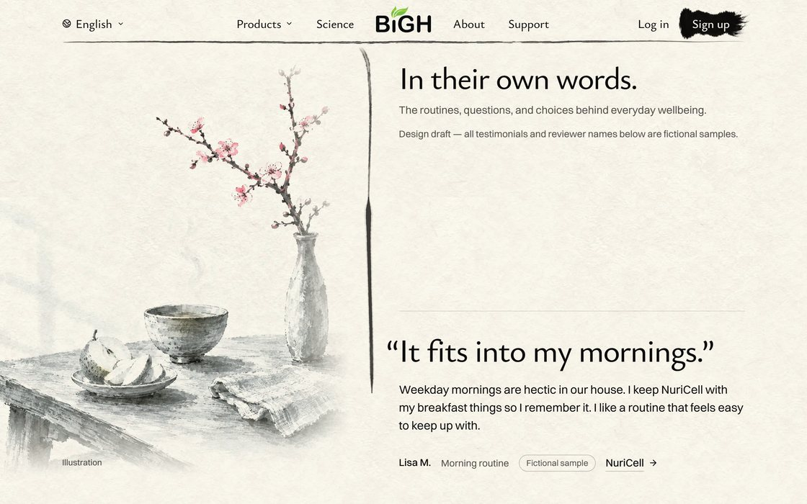
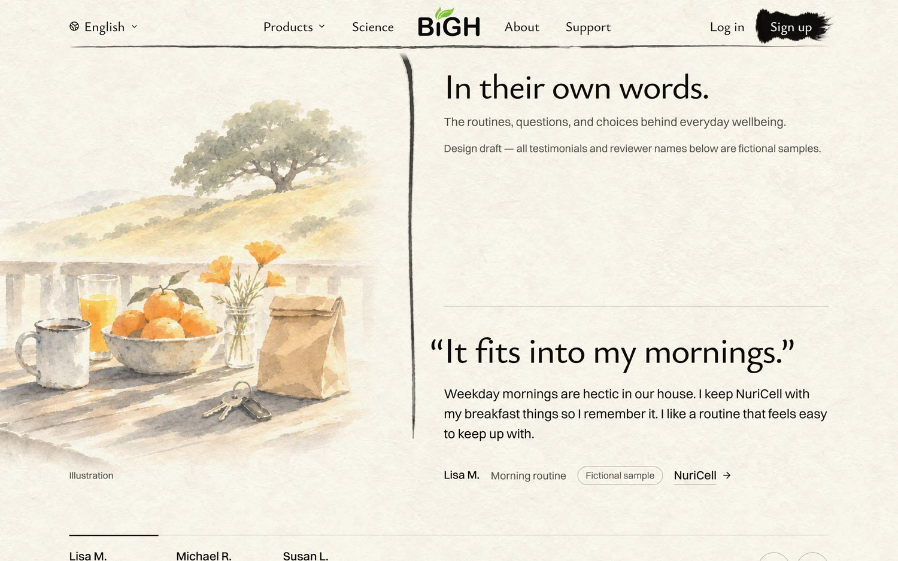
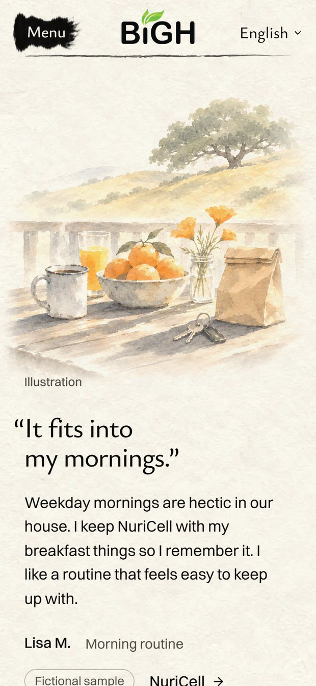
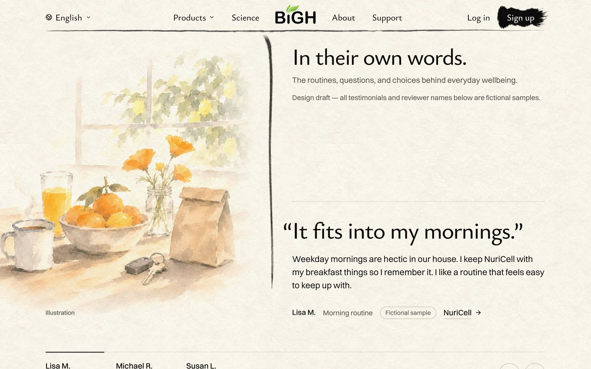
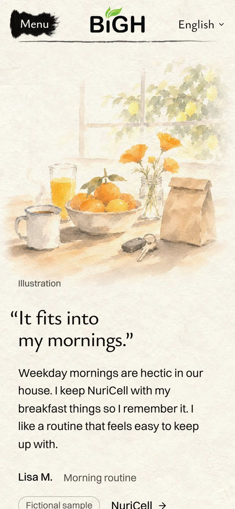

<title>Stories Painting</title>
<meta name="claude:viewport-fit-sides" content="cover">
<link rel="preconnect" href="https://fonts.googleapis.com">
<link rel="preconnect" href="https://fonts.gstatic.com" crossorigin>
<link rel="stylesheet" href="https://fonts.googleapis.com/css2?family=Ysabeau:wght@500;650&display=swap">
<style>
  /* Layout: one column; each idea is its words, the laptop and phone screens of the real
     homepage, then how the other two stories follow. */
  :root {
    --paper: #f6f1e7;
    --ink: #1d1b18;
    --ink-soft: #5d574e;
    --rule: #ddd4c4;
    --gold: #a77c25;
    --pick: #2f4a3a;
    --title: "Ysabeau", "Palatino Linotype", Palatino, Georgia, serif;
    --body: system-ui, -apple-system, "Segoe UI", Roboto, sans-serif;
  }
  @media (prefers-color-scheme: dark) {
    :root:not([data-theme="light"]) {
      --paper: #1b1a17; --ink: #f1ece2; --ink-soft: #b9b0a2;
      --rule: #3a3630; --gold: #d6aa52; --pick: #9cc3a8; color-scheme: dark;
    }
  }
  :root[data-theme="dark"] {
    --paper: #1b1a17; --ink: #f1ece2; --ink-soft: #b9b0a2;
    --rule: #3a3630; --gold: #d6aa52; --pick: #9cc3a8; color-scheme: dark;
  }
  body {
    background: var(--paper);
    color: var(--ink);
    font: 17px/1.55 var(--body);
    padding-left: max(16px, env(safe-area-inset-left, 0px));
    padding-right: max(16px, env(safe-area-inset-right, 0px));
  }
  main { max-width: 1100px; margin: 0 auto; padding-block: 40px 72px; display: grid; gap: 52px; }
  h1, h2 { font-family: var(--title); font-weight: 650; text-wrap: balance; margin: 0; letter-spacing: -0.01em; }
  h1 { font-size: clamp(34px, 6vw, 52px); line-height: 1.05; }
  h2 { font-size: clamp(26px, 4vw, 34px); line-height: 1.1; }
  p { margin: 0; max-width: 62ch; }
  .intro { display: grid; gap: 12px; }
  .intro p { color: var(--ink-soft); font-size: 18px; }
  .today { width: min(100%, 560px); }
  .choice { display: grid; gap: 14px; padding-top: 26px; border-top: 1px solid var(--rule); }
  .head { display: flex; flex-wrap: wrap; align-items: baseline; gap: 10px 16px; }
  .letter { font-family: var(--title); font-size: clamp(44px, 7vw, 60px); line-height: 0.8; color: var(--gold); font-weight: 650; }
  .score { font: 600 15px/1 var(--body); font-variant-numeric: tabular-nums; padding: 7px 11px; border: 1px solid var(--rule); border-radius: 999px; color: var(--ink-soft); }
  .tag { font: 600 13px/1 var(--body); letter-spacing: 0.06em; text-transform: uppercase; color: var(--paper); background: var(--pick); padding: 7px 10px; border-radius: 999px; }
  .what { font-size: 18px; }
  .note { color: var(--ink-soft); }
  .shots { display: grid; grid-template-columns: 3fr 1fr; gap: 12px; align-items: start; }
  figure { margin: 0; display: grid; gap: 6px; min-width: 0; }
  figure img { display: block; width: 100%; height: auto; border: 1px solid var(--rule); border-radius: 6px; }
  figcaption { font-size: 13px; color: var(--ink-soft); letter-spacing: 0.02em; }
  .rest { display: grid; gap: 4px; color: var(--ink-soft); }
  .rest ul { margin: 0; padding-left: 1.2em; display: grid; gap: 4px; }
  @media (max-width: 640px) {
    .shots { grid-template-columns: 1fr; }
    .shots figure:last-child { width: 62%; }
  }
</style>
<main>
  <header class="intro">
    <h1>In their own words, without the tea bowl</h1>
    <p>The last Asian-looking painting on the homepage. Two California mornings to take its place, each laid on the real homepage. Only the painting changes; the words stay. On a laptop the painting also runs off the screen's edge a little less, so nothing in it is cut in half.</p>
    <figure class="today"><figcaption>Today: plum blossom, tea bowl, sliced pear</figcaption></figure>
  </header>
  <section class="choice" aria-labelledby="porch-2-name">
    <div class="head">
      <span class="letter">A</span>
      <h2 id="porch-2-name">Breakfast on the back porch</h2>
      <span class="score">9 / 10</span>
      <span class="tag">My pick</span>
    </div>
    <p class="what">Coffee, orange juice, a bowl of oranges, poppies in a jam jar, a brown paper lunch bag and the car keys, on a porch looking out at golden hills and a valley oak. A busy family morning, plainly in California.</p>
    <p class="note">California at one look, and the oak fills the corner the blossom used to. Holding it back: it is softer watercolour than the Big Sur painting at the bottom of the page.</p>
    <div class="shots">
      <figure><figcaption>Laptop</figcaption></figure>
      <figure><figcaption>Phone</figcaption></figure>
    </div>
    <div class="rest"><p>The other two stories, in the same place:</p><ul><li>Michael, “I read up on it first”: the same porch at dusk, an open book and reading glasses on the arm of a wooden porch chair, a mug beside it.</li><li>Susan, “The source mattered to me”: on the porch table, a piece of honeycomb on a board beside a sprig of the green Brazilian shrub the bees take their resin from.</li></ul></div>
  </section>
  <section class="choice" aria-labelledby="kitchen-2-name">
    <div class="head">
      <span class="letter">B</span>
      <h2 id="kitchen-2-name">The kitchen table by the window</h2>
      <span class="score">8.5 / 10</span>
      
    </div>
    <p class="what">The same breakfast things on the kitchen table, with the backyard lemon tree in the window behind.</p>
    <p class="note">Warm and homey. But a kitchen could be anywhere; only the lemons say California, and the window frame is faint.</p>
    <div class="shots">
      <figure><figcaption>Laptop</figcaption></figure>
      <figure><figcaption>Phone</figcaption></figure>
    </div>
    <div class="rest"><p>The other two stories, in the same place:</p><ul><li>Michael: the same table in the evening, an open book, reading glasses and a mug, the lemon tree dark in the window.</li><li>Susan: on the table, a piece of honeycomb on a board beside a sprig of the green Brazilian shrub.</li></ul></div>
  </section>
</main>
